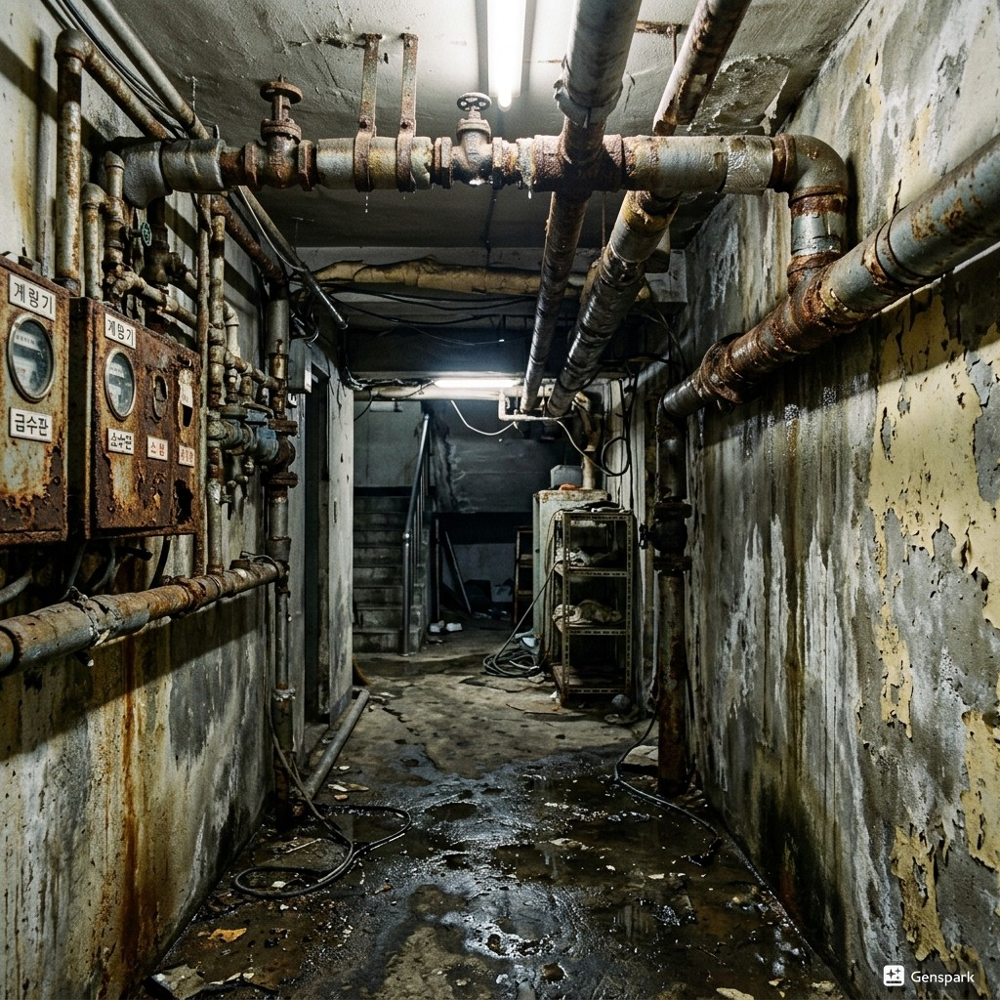

구로구 하수도공사 원인과 해결
구로구의 하수도공사 문제는 다양한 원인으로 발생합니다. 전형적인 구로공단 지역. 공장 배수 및 오래된 주택가 배관 노후화 심함 제우스시설관리는 구로구 지역의 특성을 고려하여 최적의 해결책을 제공합니다.

▲ 구로구 현장에서 전문 장비로 하수도공사 해결 작업 중
제우스시설관리는 하수도공사 문제를 해결하기 위해 최첨단 전문 장비를 갖추고 있습니다. 드레인 기계로 막힘을 물리적으로 제거하고, 관로 내시경 카메라로 정확한 원인을 파악하며, 고압세척기로 배관 내부를 완벽하게 청소합니다. 구로구 전역에 서비스 인력을 배치하여 28분 내 출동 가능합니다.

▲ 전문 장비를 이용한 하수도공사 해결 작업
구로구 하수도공사 해결 방법
구로구에서 하수도공사가 발생하는 주요 원인 중 하나는 '배관 노후화로 인한 교체'입니다. 이는 구로구의 지리적 특성과 도시 구조로 인한 자연스러운 결과입니다. 문제를 방치하면 더 큰 배관 손상으로 이어질 수 있으므로, 초기 증상이 보일 때 즉시 전문가 상담을 받는 것이 중요합니다.
제우스시설관리 전문 장비
✅ 드레인 기계 - 스프링 와이어로 배관 내 이물질을 물리적으로 파쇄·제거
✅ 관로 내시경 카메라 - 배관 내부를 실시간 영상으로 확인하여 정확한 진단
✅ 고압세척기 - 최대 200bar 고압수로 배관 내벽 오염물 완벽 세척
✅ 관로탐지기 - 매설 배관의 위치와 깊이를 정확히 탐지

▲ 제우스시설관리의 최첨단 장비로 신속하고 정확하게 처리
구로구 서비스 지역
구로구 전 지역에 28분 내 출동합니다. 야간·주말·공휴일 추가 요금 없이 동일한 서비스를 제공합니다.
구로구에서 하수도공사 문제를 경험하고 계신가요? 제우스시설관리는 24시간 긴급 대응, 출장비 무료, 문제 미해결시 비용 0원의 정책으로 구로구 주민들의 신뢰를 얻고 있습니다. 전문 기술자들이 정확한 원인 파악 후 맞춤형 해결책을 제시합니다.
구로구 하수도공사 전문가 조언
제우스시설관리는 서울·경기·인천 전 지역에서 24시간 긴급 출동 서비스를 제공합니다. 출장비 무료, 미해결 시 비용 0원이라는 파격적인 정책으로 고객 부담을 최소화합니다.
숙련된 전문 기술자가 최첨단 장비(드레인 기계, 관로 내시경 카메라, 고압세척기, 관로탐지기)를 직접 가지고 출동하여 현장에서 즉시 문제를 해결합니다.
구로구 하수도공사 자주 묻는 질문
Q. 구로구 지역 - 하수도공사가 필요한 경우는 언제인가요?
A. 배관 노후로 반복적 누수/막힘 발생, 건물 증축이나 용도 변경, 신축 건물의 하수 연결, 하수관 파손이나 침하 등의 경우에 하수도공사가 필요합니다.
Q. 구로구 지역 - 하수도공사 시 도로 굴착이 필요한가요?
A. 건물 외부 하수관 작업 시 부분적 굴착이 필요할 수 있습니다. 관로탐지기로 정확한 위치를 파악하여 최소 범위만 작업하며, 비굴착 공법(관 갱생)이 가능한 경우 도로 훼손 없이 진행합니다.
Q. 구로구 지역 - 하수도공사 인허가는 어떻게 하나요?
A. 공공 하수관 연결 공사는 지자체 허가가 필요합니다. 제우스시설관리는 인허가 서류 작성부터 시공, 준공 검사까지 원스톱으로 지원합니다.